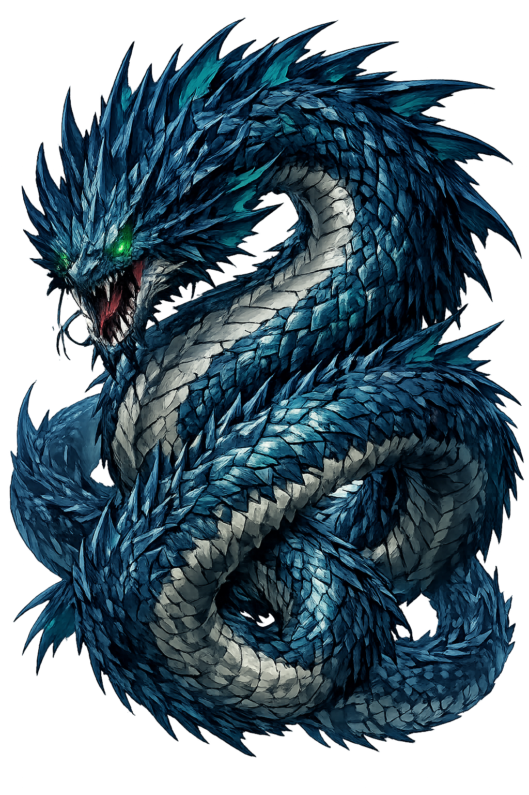

The Authentic Orthography
Sea Serpent, Chaos · Coiled sea serpent

Unicode restoration and ASCII comparison
לִוְיָתָן
The name in its original Canaanite form. Liwyāṯān (לִוְיָתָן) is attested in the source tradition — “Coiled sea serpent”. Its macron-length vowels carry the full phonetic and orthographic weight of the source tradition.
leviathan
Reduced to plain leviathan, the name loses everything that made it specific: macron-length vowels. What remains is an ASCII string that machines can parse but that no longer speaks with its original voice.
Liwyāṯān
The Unicode restoration recovers what ASCII flattened. Liwyāṯān restores macron-length vowels, returning the name to its original written dignity. The domain encodes to Punycode, but the browser displays the truth.
Liwyāṯān.com → xn--liwyn-iwaa5831d.com
The non-ASCII characters in Liwyāṯān are encoded while the ASCII remains visible. To the DNS, it is Punycode. To humanity, it is Liwyāṯān.
How Liwyāṯān travels from ancient script to the modern URL
Hebrew Liwyāṯān; the name is cognate with Ugaritic Litan and means “coiled, twisted one", a cosmic sea-serpent.
Sea Serpent, Chaos
The Unicode restoration Liwyāṯān uses registrable Latin diacritics; the Ugaritic form is not registrable in .com.
How Liwyāṯān was spoken
Dragon of Chaos, Monster of the Deep
Liwyāṯān is the serpent that the sea cannot contain and the storm-god cannot ignore. In Canaanite myth he is the seven-headed dragon Lôtān, crushed by Baʿal; in the Hebrew Bible he becomes the beast that only YHWH dares to hook, play, and slay. He is chaos given scales and breath — fire from his mouth, smoke from his nostrils, armor that no weapon can pierce.
The Ugaritic Lôtān has seven heads, a motif that survives in biblical and apocalyptic dragon imagery (KTU 1.5 i; Psalm 74:14; Revelation 12).
Job 41 describes flames streaming from his mouth and smoke from his nostrils, like a boiling pot or burning torch.
Psalm 74 says God crushed the heads of Leviathan and gave him as food to the creatures of the wilderness — a sign of divine supremacy over chaos.
In Job 40–41, Behemoth rules the land and Leviathan the sea as twin masterpieces of primal power, both beneath God's authority.
Stories of Liwyāṯān
Liwyāṯān's mythology is the combat myth of the ancient Near East in sea-serpent form. The dragon embodies the chaos that threatens ordered creation, and his defeat is the act by which the storm-god — whether Baʿal or YHWH — establishes cosmic kingship.
In the Ugaritic Baʿal Cycle, the seven-headed dragon Lôtān (ltn) is the ally or pet of Yamm, the sea. Baʿal defeats him with a mace and scatters his body. The episode is the Canaanite version of the chaoskampf, the battle against the sea that establishes divine kingship. The Hebrew Leviathan is widely recognized as the same figure, adapted into Israelite monotheism.
The psalmist, lamenting the destruction of the sanctuary, calls on God to remember his ancient victories: 'You divided the sea by your might; you broke the heads of the sea monsters on the waters. You crushed the heads of Leviathan; you gave him as food for the creatures of the wilderness.' The defeat of Leviathan is proof that YHWH can save his people again.
In Job, God speaks from the whirlwind and challenges Job to consider Leviathan. No hook can hold him; he laughs at the javelin; his scales are his pride, each one shut up tight as with a seal; fire comes from his mouth; he makes the deep boil like a pot. The point is not that Leviathan is evil but that he is unmasterable by any human. Only God can play with him as with a bird.
On that day, the LORD will punish Leviathan the fleeing serpent, Leviathan the twisting serpent, and he will slay the dragon that is in the sea. The old chaos-monster becomes a figure of the final defeat of evil, a prophecy that echoes into later Jewish and Christian apocalyptic, where the dragon is identified with Satan or the forces opposed to God.
In this hymn of creation, Leviathan is not an enemy but a creature formed to sport in the sea. 'There is the sea, great and wide... there go the ships, and Leviathan, which you formed to play in it.' The monster of chaos has been domesticated into a pet of the creator, a sign that the sea itself is bounded and purposeful.
Liwyāṯān is the monster we cannot domesticate. Job learns that the world contains powers beyond human management — not because they are evil, but because they are other. Leviathan does not sin; he simply is: fire, scale, depth, and indifference. To face him is to face the limits of human strength and the necessity of humility before whatever is greater.
Enter Extended Lore